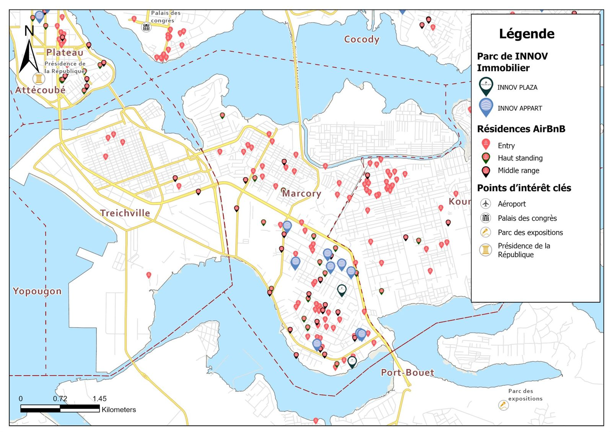

Géomarketing · Analyse de marché
Étude d'implantation immobilière, Abidjan sud
Localisation d'un parc de logements face à l'offre de résidences meublées, classée par gamme, avec les points d'intérêt clés. Marcory, Treichville, Koumassi, Port-Bouët.